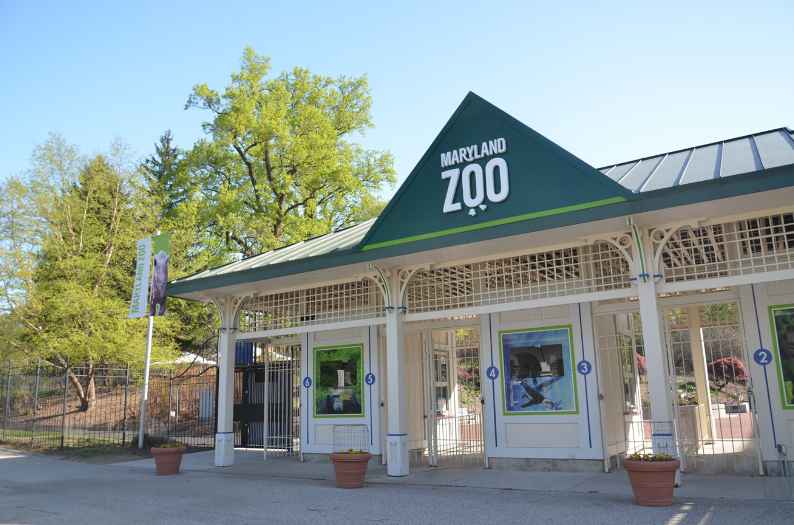
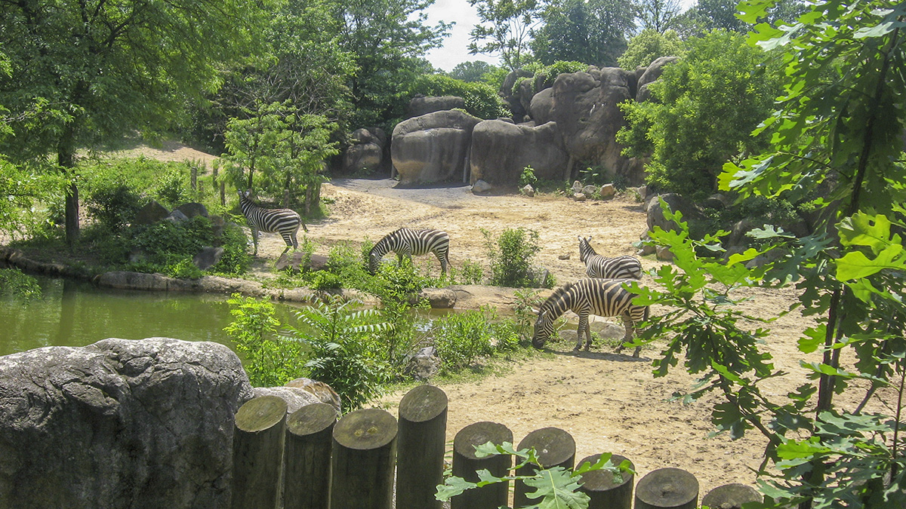

Activities
Maryland Zoo
-

The Maryland Zoo, located in Baltimore's Druid Hill Park, is a well-known wildlife conservation and teaching facility that provides an unforgettable experience for visitors of all ages. The zoo, which has been in operation since 1876, is home to a wide variety of animals from all over the world. Its interactive exhibits include African elephants, giraffes, lions, and penguins, allowing visitors to get up close and personal with these interesting animals.
-

The zoo is dedicated to conservation initiatives and offers educational programs to promote wildlife protection and environmental stewardship. The Maryland Zoo, with its magnificent park surrounds, fascinating exhibits, and strong emphasis on animal welfare and education, allows adults and families to connect with the wonders of the natural world while learning about the necessity of wildlife preservation.